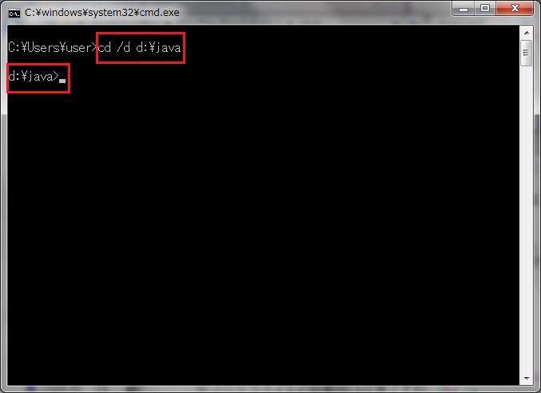
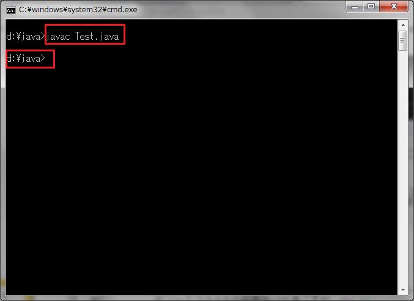
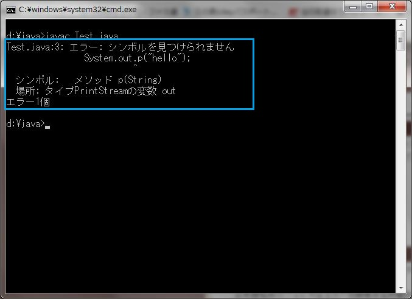
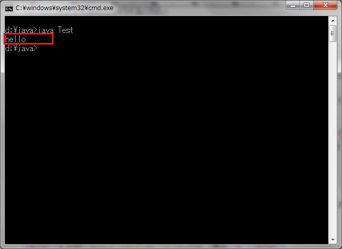

Windows7でコンパイルと実行
ソースファイルの準備
メモ帳(デスクトップ上で右クリック→新規作成)やテキストエディタを開き、
下記コードを入力後、ファイル名を「Test.java」にして保存する。
public class Test{
public static void main(String[] args){
System.out.print("hello");
}
}
ソースファイルのコンパイル
1.今後の作業を楽にする為、ソースファイルを移します。
※ソースファイルの移動先は任意ですが、
日本語名称のフォルダはエラーを誘発する可能性がある為、避けた方が良いです。
※今後はDドライブの直下に「java」フォルダを作成した事を想定して説明します。
2.コマンドプロンプトを開き『cd /d d:¥java 』と入力して『リターン』キーを押す。
3.下図の通り『d:¥java > 』と表示されている事を確認する。

4.『javac Test.java 』と入力して『リターン』キーを押す。
5.下図の通り『d:¥java > 』と表示されている事を確認する。

※エラーが存在する場合は下図の通り表示されます。
エラーメッセージを手掛かりにソースファイルを修正します。

今回は『System.out.print("hello")』と記述すべきところを
『System.out.p("hello")』と記述している為、構文解析エラーとなっています。
ソースファイルの実行
1.『java Test 』と入力して『リターン』キーを押す。
※実行はクラスファイルでは無くクラスそのものを指定する為、拡張子はつけません
2.下図の通り『hello 』と表示されている事を確認する。
